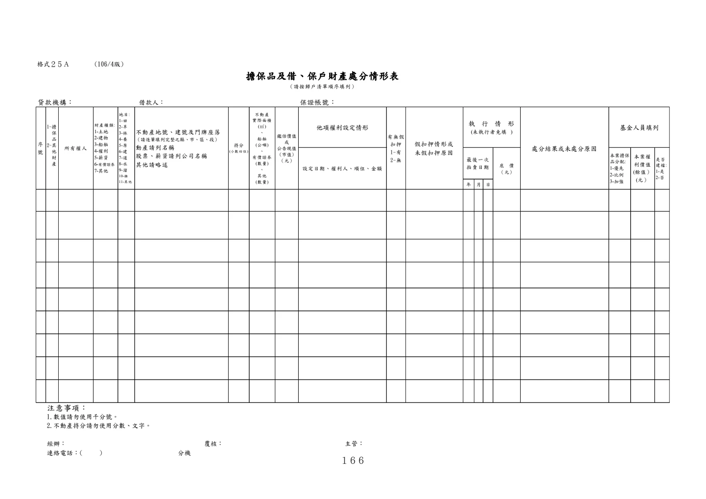

格式 25A：擔保品及借、保戶財產處分情形表
手冊頁：166 PDF頁：178／203

查看PDF文字層
下列文字取自PDF既有文字層，僅供搜尋、複製與無障礙輔助。複雜表格的欄列位置可能失真，正式內容請以原頁預覽或PDF為準。
他項權利設定情形 年 月 日 注意事項： 1.數值請勿使用千分號。 2.不動產持分請勿使用分數、文字。 連絡電話：( ) 分機 鑑估價值 或 公告現值 (市值) （元） 地目 : 1-田 2-旱 3-林 4-養 5-原 6-建 7-道 8-水 9-溜 10-雜 11-其他 借款人： 保證帳號：貸款機構： 不動產地號、建號及門牌座落 （請逐筆填列完整之縣、市、區、段） 動產請列名稱 股票、薪資請列公司名稱 其他請略述 所有權人 設定日期、權利人、順位、金額 1-擔 1-保 1-品 2-其 2-他 2-財 2-產 品 本案權 利價值 (餘值） (元） 基金人員填列 是否 建檔 : 1-是 2-否 執 行 情 形 (未執行者免填 ) 最後一次 拍賣日期 底 價 （元） 本案擔保 品分配: 1-優先 2-比例 3-加強 有無假 扣押 1-有 2-無 假扣押情形或 未假扣押原因 (106/4版) 處分結果或未處分原因 （請按歸戶清單順序填列） 經辦： 覆核： 主管： 格式２５Ａ 擔保品及借、保戶財產處分情形表 持分 (小數四位 ) 不動產 實際面積 (㎡) 、 船舶 (公噸 ) 、 有價證券 (數量 ) 、 其他 (數量 ) 序 號 財產種類 : 1-土地 2-建物 3-船舶 4-權利 5-薪資 6-有價證券 7-其他